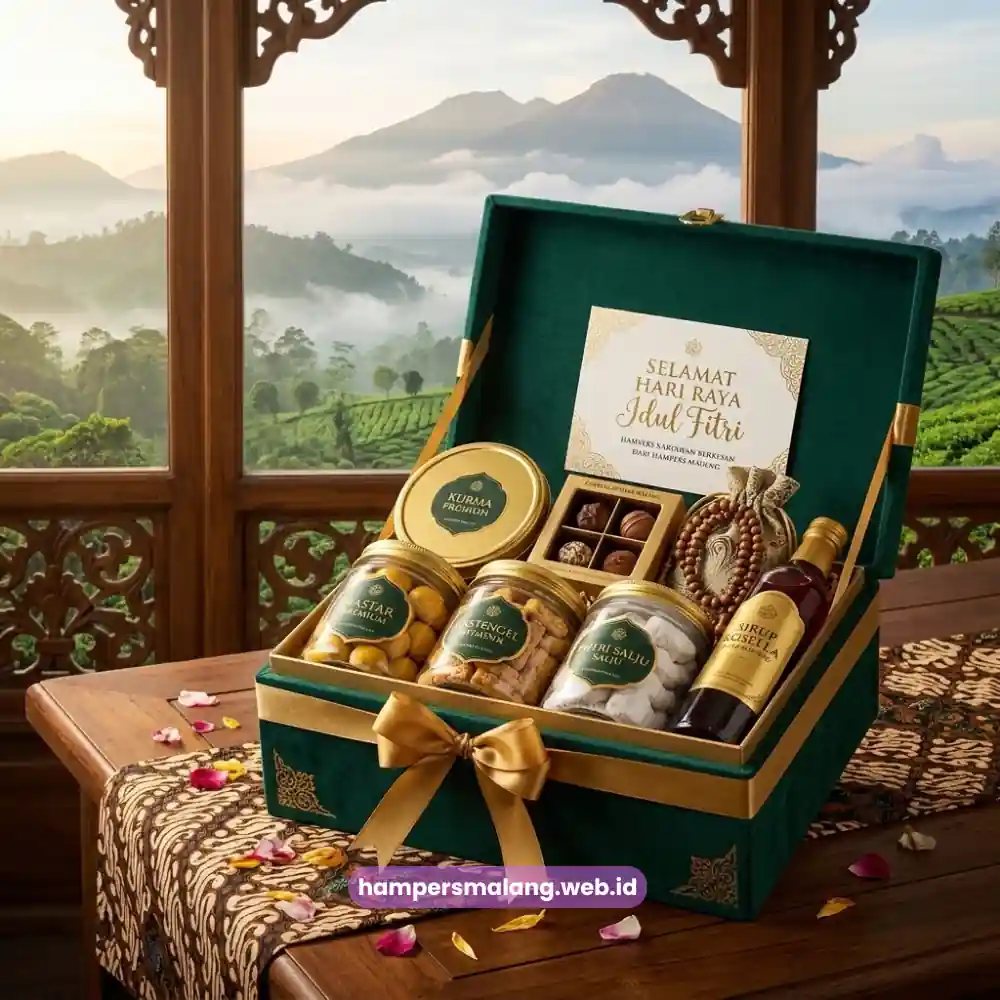

Ide isi hampers hari raya untuk karyawan kantor yang berkesan sebaiknya menggabungkan unsur kepraktisan, kualitas produk, dan sentuhan personal.
Kombinasi seperti makanan ringan premium, produk perawatan diri, dan perlengkapan rumah tangga bertema hari raya umumnya menjadi pilihan yang paling dihargai.
Karyawan sangat menyukai produk yang dapat langsung digunakan atau dinikmati bersama keluarga di rumah saat hari raya tiba.
- Isi hampers karyawan idealnya fungsional, bukan sekadar dekoratif, agar benar-benar bernilai bagi penerima.
- Kombinasi makanan, perawatan diri, dan perlengkapan rumah menjadi kategori paling umum dipilih perusahaan.
- Konsistensi kualitas antar hampers penting untuk menjaga persepsi keadilan di lingkungan kerja.
- Sentuhan personalisasi ringan mampu meningkatkan kesan hangat tanpa menambah biaya besar.
- Pemesanan melalui penyedia berpengalaman seperti Hampers Malang mempermudah kurasi isi hampers dalam jumlah besar.
Mengapa Isi Hampers Karyawan Perlu Direncanakan dengan Cermat?
Isi hampers karyawan mencerminkan seberapa besar perhatian perusahaan terhadap kesejahteraan timnya di luar konteks pekerjaan formal.
Pemilihan produk yang asal-asalan dapat menimbulkan kesan kurang serius dari pihak manajemen terhadap karyawannya.
Sementara itu, isi yang tepat sasaran justru akan memperkuat loyalitas dan semangat kerja karyawan pasca libur hari raya.
Data internal industri gifting korporat menunjukkan bahwa produk dengan nilai kegunaan sehari-hari lebih diapresiasi oleh sebagian besar karyawan.
Produk fungsional jauh lebih diminati dan dihargai dibandingkan barang dekoratif yang jarang digunakan sehari-hari.
Pola permintaan hampers korporat sepanjang periode 2022-2025 ini menjadi acuan penting bagi tim HR dalam menentukan kategori produk.
Kategori Produk Apa Saja yang Cocok untuk Hampers Karyawan?
Kategori makanan ringan premium seperti kue kering, cokelat, atau camilan khas hari raya menjadi pilihan paling universal yang aman.
Produk ini sangat disukai karena dapat dinikmati oleh hampir seluruh kalangan usia dan latar belakang karyawan Anda.
Produk makanan juga dinilai relatif mudah dikombinasikan dengan berbagai kategori barang lain dalam satu paket hampers utuh.
Selain makanan, kategori produk perawatan diri seperti sabun, lotion, atau paket mandi bertema hari raya turut menjadi favorit.
Produk perawatan diri memberikan nilai relaksasi yang sangat dibutuhkan karyawan setelah periode kerja yang padat sepanjang tahun.
Kategori ini sangat cocok dipadukan dengan tema kebersihan dan kesegaran tubuh menyambut perayaan hari raya yang spesial.
Perlengkapan rumah tangga ringan juga banyak dipilih perusahaan karena memiliki daya tahan pemakaian yang jauh lebih panjang.
Peralatan makan bertema hari raya atau dekorasi rumah sederhana membuat kesan pemberian hampers tersebut dapat bertahan lebih lama.
Baca Juga: Hampers Hari Raya Perusahaan Terbaik untuk Karyawan dan Klien
Bagaimana Menentukan Kombinasi Isi yang Seimbang?
Kombinasi isi hampers yang baik biasanya mengandalkan tiga hingga lima jenis produk dengan variasi kategori yang saling melengkapi.
Hindari hanya menumpuk produk sejenis dalam jumlah besar agar hampers tidak terkesan monoton dan membosankan bagi penerima.
Variasi ini membuat hampers terasa lebih kaya dan mewah tanpa harus meningkatkan anggaran perusahaan secara signifikan.
Perusahaan sangat disarankan menyeimbangkan antara produk konsumsi langsung dan produk dengan daya tahan pakai yang lebih panjang.
Hal ini akan memastikan kesan hampers tidak hanya dirasakan pada saat momen hari raya itu saja berlangsung.
Karyawan akan tetap mengingat apresiasi tersebut saat produk non-konsumsi masih terus digunakan beberapa waktu setelahnya.

Apakah Personalisasi Diperlukan pada Hampers Karyawan?
Personalisasi sederhana terbukti ampuh meningkatkan kesan hangat dan personal meskipun isi hampers secara keseluruhan seragam antar karyawan.
Anda cukup mencantumkan nama karyawan atau nama divisi pada bagian kartu ucapan yang disertakan dalam paket.
Pendekatan ini sangat ringan dari sisi biaya namun akan berdampak begitu signifikan pada persepsi bahagia si penerima.
Beberapa perusahaan juga sering menambahkan pesan singkat dari pimpinan divisi sebagai bentuk apresiasi kerja langsung.
Pesan dari pimpinan ini sukses membuat hampers terasa jauh lebih personal dibandingkan sekadar paket standar dari perusahaan.
Bagaimana Menjaga Konsistensi Kualitas untuk Hampers dalam Jumlah Besar?
Konsistensi kualitas menjadi tantangan tersendiri ketika perusahaan perlu menyiapkan hampers dalam jumlah puluhan hingga ratusan unit sekaligus.
Standarisasi proses kurasi dan pengemasan sejak awal sangat membantu kelancaran pengadaan barang dalam skala besar.
Hal ini diupayakan untuk memastikan setiap karyawan menerima kualitas yang setara tanpa adanya perbedaan mencolok yang memicu kecemburuan.
Bekerja sama dengan penyedia hampers yang memiliki sistem produksi terstandarisasi menjadi solusi paling praktis dan aman.
Terutama bagi perusahaan yang tidak memiliki sumber daya internal memadai untuk mengurus proses kurasi secara mandiri.
Hampers Malang menyediakan layanan kurasi isi hampers karyawan dengan standar kualitas yang konsisten untuk pesanan jumlah besar.
Layanan kami juga sudah lengkap dengan opsi personalisasi kartu ucapan yang dapat disesuaikan dengan kebutuhan perusahaan Anda.
Ide isi hampers hari raya untuk karyawan kantor yang berkesan selalu berpusat pada kombinasi produk yang fungsional.
Pastikan Anda menjaga kualitas yang konsisten dan menyempatkan sentuhan personalisasi ringan pada setiap paket yang akan dibagikan.
Perencanaan kategori produk sejak awal pasti membantu perusahaan menyusun hampers yang benar-benar dihargai oleh seluruh karyawan.
Wujudkan hampers hari raya karyawan yang berkesan dan rapi bersama Hampers Malang sekarang juga.
Kami memiliki layanan kurasi dan pengemasan yang siap mendukung kebutuhan hadiah perusahaan Anda dalam jumlah besar sekaligus.
Tanya Jawab Seputar Ide Isi Hampers Karyawan
Kategori makanan ringan premium, produk perawatan diri, dan perlengkapan rumah tangga ringan menjadi kombinasi yang paling umum dipilih perusahaan.
Sebaiknya isi hampers tetap konsisten antar karyawan dalam level yang sama untuk menjaga persepsi keadilan di lingkungan kerja.
Cukup dengan mencantumkan nama penerima atau pesan singkat pada kartu ucapan tanpa perlu mengubah isi produk secara keseluruhan.

Butuh Hampers Perusahaan?
Solusi Hampers & Corporate Gift Kreatif di Jawa Timur.
Ditulis oleh Tim Maroon Souvenir
Sahabat mahasiswa dan pelaku bisnis di Malang Raya. Berpengalaman menangani merchandise event kampus, instansi pemerintahan, dan hotel berbintang di Batu.